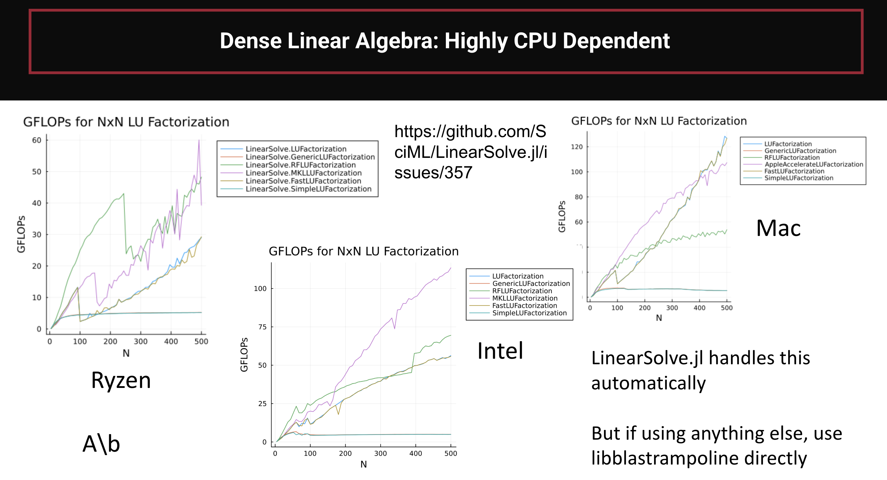

Accelerating your Linear Solves
This section is essential if you wish to achieve maximum performance with LinearSolve.jl, especially on v7 and above. Please ensure the tips of this section are adhered to when optimizing code and benchmarking.
Great, you've learned how to use LinearSolve.jl and you're using it daily, either directly or through other SciML libraries, and you want to improve your performance. How can this be done? While it might seem at first like a hopeless endeavour, "A\b uses a BLAS library and so it's already highly optimized C code", it turns out there are many factors you need to consider to squeeze out the last 10x of performance. And yes, it can be about a factor of 10 in some scenarios, so let's dive in.
Understanding Performance of Dense Linear Solves
The performance of dense linear solvers is highly dependent on the size of the matrix and the chosen architecture to run on, i.e. the CPU. This issue gathered benchmark data from many different users and is summarized in the following graphs:

Now one thing that is immediate is for example that AppleAccelerate generally does well on Apple M-series chips, MKL generally does well on Intel, etc. And we know this in LinearSolve.jl, in fact we automatically default to different BLASes based on the CPU architecture already as part of the design! So that covers most of the variation, but there are a few major tips to note when fine tuning the results to your system:
- One of the best methods for size 150x150 matrices and below is RecursiveFactorization.jl. This is a pure Julia BLAS system, but it has a high load time overhead, and thus as of v7 it's no longer loaded by default! Thus if your matrices are in this range and you would value better run times at the cost of compile and load times, it is recommended you add
using RecursiveFactorization. The defaulting algorithm will then consider it in its list and will automatically (in an architecture-specific way) insert it as it feels necesssary. - One of the major factors that can inhibit BLAS performance on LU factorization is multithreading. In many of these plots you can see a giant dip in GFLOPs (higher is better) when a certain size threshold is hit. This is because, for the number of chosen threads, there was not enough work and thus when the threading threshold is hit you get a hit to the performance due to the added overhead. The threading performance can be a per-system thing, and it can be greatly influenced by the number of cores on your system and the number of threads you allow. Thus for example, OpenBLAS' LU factorization seems to generally be really bad at guessing the thread switch point for CPUs with really high core/thread counts. If this is the case, you may want to investigate decreasing your number of BLAS threads, i.e. via
BLAS.set_num_threads(i). Note that RecursiveFactorization.jl uses your Julia thread pool instead of the BLAS threads. - The switch points between algorithms can be fairly inexact. LinearSolve.jl tried to keep a tab on where they are per platform and keep updated, but it can be a moving battle. You may be able to eek out some performance by testing between the various options on your platform, i.e. RFLUFactorization vs LUFactorization vs AppleAccelerateLUFactorization (M-series) vs MKLFactorization (X86) and hardcoding the choice for your problem if the default did not make the right guess.
As noted, RecursiveFactorization.jl is one of the fastest linear solvers for smaller dense matrices but requires using RecursiveFactorization in order to be used in the default solver setups! Thus it's recommended that any optimized code or benchmarks sets this up.
Understanding Performance of Sparse Linear Solves
Sparse linear solvers are not as dependent on the CPU but highly dependent on the problem that is being solved. For example, this is for a 1D laplacian vs a 3D laplacian, changing N to make smaller and bigger versions:
Notice that the optimal linear solver changes based on problem (i.e. sparsity pattern) and size. LinearSolve.jl just uses a very simple "if small then use KLU and if large use UMFPACK", which is validated by this plot, but leaves a lot to be desired. In particular, the following rules should be thought about:
- Pardiso is a great solver, you should try
using Pardisoand usingMKLPardiso()in many scenarios. - The more structured a sparsity pattern is, the worse KLU is in comparison to the other algorithms.
- A Krylov subspace method with proper preconditioning will be better than direct solvers when the matrices get large enough. You could always precondition a sparse matrix with iLU as an easy choice, though the tolerance would need to be tuned in a problem-specific way.
UMFPACK does better when the BLAS is not OpenBLAS. Try using MKL on Intel and AMD Ryzen platforms and UMPACK will be faster! LinearSolve.jl cannot default to this as this changes global settings and thus only defaults to MKL locally, and thus cannot change the setting within UMFPACK.